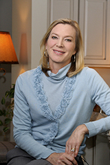

Understanding Brain Injury
Talking with your patients about their new injury is about to get easier.


Narrated by Judy Fortin, former CNN anchor and medical correspondent.

Special introduction by Lee Woodruff, wife of ABC News reporter Bob Woodruff who sustained a traumatic brain injury while reporting on the war in Iraq in 2006.
Shepherd Center, located in Atlanta, Georgia, is a private, not-for-profit hospital specializing in medical treatment, research and rehabilitation for people with spinal cord injury and brain injury.
KPK is an award-winning branding and communication group, founded in 2000 by well-known Atlanta communication leader Karin Pendley Koser.
Every 9 seconds, someone in the United States sustains a brain injury.

Acquired brain injury (ABI) is any injury to the brain that is not hereditary, congenital, degenerative, or induced by birth trauma.
More than 3.5 million children and adults sustain an ABI each year, but the total incidence is unknown.

Traumatic brain injury (TBI) is type of ABI. A TBI is caused by trauma to the brain from an external force.

One of every 60 people in the United States lives with a TBI- related disability.
TBIs do not always include an open head wound, skull fracture or even a loss of consciousness.

When Austin Vestal ran across the finish line at the Gate River Run 15K in Jacksonville, Fla., in March 2013, it was nothing short of a miracle. Just nine months earlier, on June 2, 2012, Austin was in a horrific car accident that almost killed him. Read more

It was like any other morning for Amanda Francis, a first grade teacher living in Gaffney, S.C. She woke up and quickly jumped in the shower to get ready for work. But from there, things took a turn for the worse. Read more

Occupational therapist Karla Knuth works with patient Josh Griffin on cooking skills in Shepherd Center's Acquired Brain Injury Unit. Read more